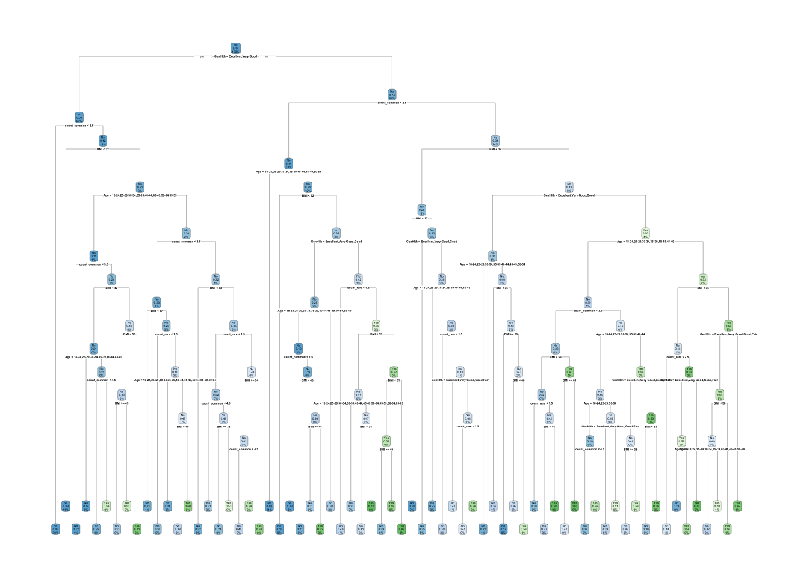

library(tidymodels)
library(parsnip)Models
Building 2 Models predicting ‘Diabetes_binary’ using ‘log-loss’ as evaluation metric
Introduction
The data resulting from the previous EDA will be used in creating the predictive models for diabetes. We will perform a comparison between a tuned classification tree and a tuned random forest model. The chosen model is of the form:
y = BMI + Age + GenHlth + count_common + count_rare
Where count_common is a count how many of the common influencing factors are present (HighBP, HighChol) and count_rare is less frequent items (Stroke).
Data split
set.seed(107)
data_split <- initial_split(data_fixed_m, prop = 0.7, strata = Diabetes_binary)
data_train <- training(data_split)
data_test <- testing(data_split)
data_5_fold <- vfold_cv(data_train, v=5, strata = Diabetes_binary)First we split the data into train and test set. This allows us to get a more accurate sense of how the model will perform on unseen data. The folds used for cross-validation in tuning model parameters is set up as well. Using 5-fold due to run-time of the random-forest.
Model recipe
model_recipe <- recipe(Diabetes_binary ~ BMI + Age + GenHlth + count_common + count_rare, data = data_train) |>
step_mutate(
GenHlth = factor(GenHlth, ordered = TRUE),
Age = factor(Age, ordered = TRUE)
)
model_recipe |> prep() |> bake(new_data = data_train)# A tibble: 177,575 × 6
BMI Age GenHlth count_common count_rare Diabetes_binary
<dbl> <ord> <ord> <dbl> <dbl> <fct>
1 40 60-64 Poor 4 1 No
2 25 50-54 Good 2 0 No
3 28 60-64 Poor 3 1 No
4 27 70-74 Very Good 2 1 No
5 24 70-74 Very Good 3 1 No
6 30 60-64 Good 2 1 No
7 25 70-74 Good 5 1 No
8 24 55-59 Very Good 0 1 No
9 34 65-69 Good 4 1 No
10 26 50-54 Good 1 1 No
# ℹ 177,565 more rowsThe model recipe predictors are those from the prior processing, leaving out the factors that make up the count_common and count_rare fields. Using the set of those over the counts did not seem to improve prediction, so this keeps the complexity down. GenHlth and Age are specified as ordered factors for the splits to be chosen by a split and not by dummy variables.
Model 1: Classification Tree
A classification tree will try to build a tree that splits the data on different values of the predictors. It tries to find the best splits, or the ones that separate the most “pure” part of the data to one side and the more mixed data on the other. Pure meaning all or most of the example data had one outcome on the response variable, we are saying that if we see this value, then we think it’s likely a new data point would also have that outcome.
The classification tree has some hyperparameters that will effect the splits and tree size/complexity.
- Tree depth: How deep can the tree expand to, or how many successive splits are allowed?
- Min split: How many values are needed to split on. If how many is in a particular branch of the tree is 25 items of 70/30 mix, but we had set 30 min to split, then it would split no further (even though there is more separation to be had).
- Cost complexity: Is there a penalization for having more complex trees? So it would need to gain enough information to justify the split, given the penalizing factor.
class_tree_spec <- decision_tree(tree_depth = tune(), min_n = 20, cost_complexity = tune()) |>
set_engine("rpart") |>
set_mode ("classification")
class_tree_wkf <- workflow() |>
add_recipe(model_recipe) |>
add_model(class_tree_spec)The tuning will be done on 2 parameters, tree_depth and cost_complexity. These values are in ranges empirically chosen from stepping up the data size and getting multiple smaller tunes (for speed purposes), including the choice of min_n. The value of min_n is set to 20 (searching through 5-60) by results of the smaller tuning results. The tree_depth and cost_complexity will further do a larger tuning search on the full training set.
class_tree_grid <- class_tree_wkf |>
tune_grid(
resamples=data_5_fold,
grid=grid_regular(
tree_depth(range(6L, 20L)),
cost_complexity(range(-10, -1)),
levels=c(5, 15)),
metrics = metric_set(mn_log_loss, accuracy)
# control = control_grid(verbose = TRUE)
)The tree depth in most runs tends to be around 11. The cost complexity always comes out to be the minimum of anything given, as in the most complex tree is always favored. More focus on the tuning will be done on the cost_complexity range.
class_tree_grid |>
collect_metrics() |>
filter(.metric == "mn_log_loss") |>
ggplot(aes(x=tree_depth, y=mean, color=as.factor(cost_complexity))) +
geom_line()These plots show the log_loss value result from the various tuning settings.
best_log_loss <- class_tree_grid |>
select_best(metric = "mn_log_loss")
best_log_loss# A tibble: 1 × 3
cost_complexity tree_depth .config
<dbl> <int> <chr>
1 0.0000000001 9 Preprocessor1_Model02Using log_loss, select the combination that resulted in the best (lowest) log_loss value. This should be the best version (or close to) of this model for this metric that can be achieved.
class_tree_final_fit <- class_tree_wkf |>
finalize_workflow(best_log_loss) |>
last_fit(data_split, metrics = metric_set(mn_log_loss, accuracy))Finally, we fit the model on the full data.
tree_final_model <- extract_workflow(class_tree_final_fit)
tree_final_model |>
extract_fit_engine() |>
rpart.plot::rpart.plot(roundint = FALSE)Warning: labs do not fit even at cex 0.15, there may be some overplotting
This is the resulting tree, which is likely very complex given the tree_depth and cost_complexity tuning. Primarily because the cost_complexity seems to not favor penalizing at all.
class_tree_final_fit |>
collect_metrics()# A tibble: 2 × 4
.metric .estimator .estimate .config
<chr> <chr> <dbl> <chr>
1 accuracy binary 0.863 Preprocessor1_Model1
2 mn_log_loss binary 0.340 Preprocessor1_Model1The resulting log_loss and accuracy are shown here. It is minimized for log_loss, but accuracy is presented just as a check against the 0.86 or better claim for just predicting all as no diabetes.
Model 2: Random Forest
A random forest is like the basic classification tree, but very many simpler trees are constructed slightly differently and the full amalgamation of these trees vote on what is the final prediction. For each tree, it randomly selects a group of predictors to use.
The random forest has two hyperparameters:
- Number of sampled predictors: How many predictors to use for each of the small trees when randomly selecting.
- Number of trees: How many trees are constructed totally for the model.
- Min split: How many values are needed to split on (same as classification tree).
RF_spec <- rand_forest(
mtry = tune(), # default is 1
trees = tune(), # default is 500
min_n = tune()) |> # default is 2
set_engine("ranger", importance="impurity") |>
set_mode("classification")
RF_wkf <- workflow() |>
add_recipe(model_recipe) |>
add_model(RF_spec)Tune on each of the values. Random forest takes a long time, so the ranges used will be empirically selected from smaller runs.
RF_grid <- RF_wkf |>
tune_grid(
resamples = data_5_fold,
grid = grid_regular(
mtry(range(1L, 2L)),
trees(range(1000L, 3000L)),
min_n(range(2L, 40L)),
levels=c(2, 3, 4)
),
metrics = metric_set(mn_log_loss, accuracy)
# control = control_grid(verbose = TRUE)
)Mtry always comes out as 1 in every iteration. To keep the cost of tuning down, we will only consider 1 against 2 for this value. The number of trees and the min split values will be considered in further detail.
RF_grid |>
collect_metrics() |>
filter(.metric == "mn_log_loss") |>
ggplot(aes(x=mtry, y=mean, color=as.factor(trees))) +
facet_wrap(~min_n) +
geom_line()This plot shows all of the tuned values, where log_loss minimum is desired.
best_log_loss <- RF_grid |>
select_best(metric = "mn_log_loss")
best_log_loss# A tibble: 1 × 4
mtry trees min_n .config
<int> <int> <int> <chr>
1 2 3000 40 Preprocessor1_Model24Select for the best combination of the 3 hyperparameters in terms of log_loss.
RF_final_fit <- RF_wkf |>
finalize_workflow(best_log_loss) |>
last_fit(data_split, metrics = metric_set(mn_log_loss, accuracy))Fit the final random forest model using these values.
RF_final_model <- extract_fit_engine(RF_final_fit)
importance_values <- RF_final_model$variable.importance
importance_df <- data.frame(
term = names(importance_values),
value = importance_values
) |>
as_tibble() |>
arrange(desc(value))
importance_df |>
mutate(term = factor(term, levels = term)) |>
ggplot(aes(x=term, y=value)) +
geom_bar(stat = "identity") +
coord_flip()
Further, we can get variable importance (could do for the other), just to get a sense of what is directing the model more substantially in it’s predictions.
RF_final_fit |>
collect_metrics()# A tibble: 2 × 4
.metric .estimator .estimate .config
<chr> <chr> <dbl> <chr>
1 accuracy binary 0.864 Preprocessor1_Model1
2 mn_log_loss binary 0.324 Preprocessor1_Model1The outcome metrics for this best model. Log loss is minimized and accuracy is present as well, as a comparison against the “everything no diabetes” guess.